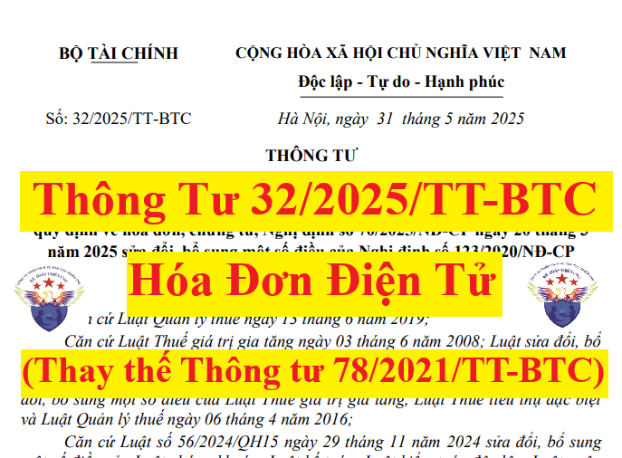

Ngày 31/5/2025, Bộ trưởng Bộ Tài chính ban hành Thông tư 32/2025/TT-BTC hướng dẫn thực hiện Nghị định 70/2025/NĐ-CP sửa đổi, bổ sung một số điều của Nghị định 123/2020/NĐ-CP.
Thông tư 32/2025/TT-BTC có hiệu lực từ ngày 01/6/2025 và thay thế Thông tư số 78/2021/TT-BTC
Chi tiết nội dung của Thông tư 32/2025/TT-BTC như sau:
THÔNG TƯ
Căn cứ Luật Quản lý thuế ngày 13 tháng 6 năm 2019;HƯỚNG DẪN THỰC HIỆN MỘT SỐ ĐIỀU CỦA LUẬT QUẢN LÝ THUẾ NGÀY 13 THÁNG 6 NĂM 2019, NGHỊ ĐỊNH SỐ 123/2020/NĐ-CP NGÀY 19 THÁNG 10 NĂM 2020 CỦA CHÍNH PHỦ QUY ĐỊNH VỀ HÓA ĐƠN, CHỨNG TỪ, NGHỊ ĐỊNH SỐ 70/2025/NĐ-CP NGÀY 20 THÁNG 3 NĂM 2025 SỬA ĐỔI, BỔ SUNG MỘT SỐ ĐIỀU CỦA NGHỊ ĐỊNH SỐ 123/2020/NĐ-CP Căn cứ Luật Thuế giá trị gia tăng ngày 03 tháng 6 năm 2008; Luật sửa đổi, bổ sung một số điều của Luật Thuế giá trị gia tăng ngày 19 tháng 6 năm 2013; Luật sửa đổi, bổ sung một số điều của các luật về thuế ngày 26 tháng 11 năm 2014; Luật sửa đổi, bổ sung một số điều của Luật Thuế giá trị gia tăng, Luật Thuế tiêu thụ đặc biệt và Luật Quản lý thuế ngày 06 tháng 4 năm 2016; Căn cứ Luật số 56/2024/QH15 ngày 29 tháng 11 năm 2024 sửa đổi, bổ sung một số điều của Luật chứng khoán; Luật kế toán; Luật kiểm toán độc lập, Luật ngân sách nhà nước; Luật quản lý, sử dụng tài sản công; Luật quản lý thuế; Luật thuế thu nhập cá nhân; Luật dự trữ quốc gia; Luật xử lý vi phạm hành chính; Căn cứ Luật Thuế giá trị gia tăng ngày 26 tháng 11 năm 2024; Căn cứ Luật Kế toán ngày 20 tháng 11 năm 2015; Căn cứ Luật Giao dịch điện tử ngày 22 tháng 6 năm 2023; Căn cứ Luật Công nghệ thông tin ngày 29 tháng 6 năm 2006; Căn cứ Nghị định số 123/2020/NĐ-CP ngày 19 tháng 10 năm 2020 của Chính phủ quy định về hóa đơn, chứng từ và Nghị định số 70/2025/NĐ-CP ngày 20 tháng 3 năm 2025 sửa đổi, bổ sung một số điều của Nghị định số 123/2020/NĐ-CP ngày 19 tháng 10 năm 2020 của Chính phủ quy định về hóa đơn, chứng từ; Căn cứ Nghị định số 29/2025/NĐ-CP ngày 24 tháng 02 năm 2025 của Chính phủ quy định chức năng, nhiệm vụ, quyền hạn và cơ cấu tổ chức của Bộ Tài chính; Theo đề nghị của Cục trưởng Cục Thuế; Bộ trưởng Bộ Tài chính ban hành Thông tư hướng dẫn thực hiện một số điều của Luật Quản lý thuế ngày 13 tháng 6 năm 2019, Nghị định số 123/2020/NĐ-CP ngày 19 tháng 10 năm 2020 của Chính phủ quy định về hóa đơn, chứng từ, Nghị định số 70/2025/NĐ-CP/2025 ngày 20 tháng 3 năm 2025 sửa đổi, bổ sung một số điều của Nghị định số 123/2020/NĐ-CP như sau: Điều 1. Phạm vi điều chỉnh Thông tư hướng dẫn thi hành các khoản 3, 6, 7, 11, 18, 37 và khoản 38 Điều 1 Nghị định số 70/2025/NĐ-CP ngày 20/3/2025 của Chính phủ và một số trường hợp theo yêu cầu quản lý bao gồm: hướng dẫn lập hóa đơn điện tử đối với hoạt động cho thuê tài chính, hướng dẫn xử lý chuyển tiếp. Điều 2. Đối tượng áp dụng Đối tượng áp dụng hướng dẫn tại Thông tư này là tổ chức, cá nhân quy định tại Điều 2 Nghị định số 123/2020/NĐ-CP và khoản 1 Điều 1 Nghị định số 70/2025/NĐ-CP. Điều 3. Tổ chức thực hiện biện pháp khuyến khích người tiêu dùng lấy hóa đơn khi mua hàng hóa, dịch vụ 1. Cục Thuế sử dụng cơ sở dữ liệu về hóa đơn điện tử để xây dựng, triển khai chương trình hóa đơn may mắn đối với những hóa đơn điện tử có người mua là người tiêu dùng. 2. Cục Thuế xây dựng phương án tổ chức, tần suất quay thưởng, giá trị giải thưởng chương trình hóa đơn may mắn trên cơ sở dữ liệu về hóa đơn điện tử báo cáo Bộ trưởng Bộ Tài chính xem xét phê duyệt trước khi thực hiện. Điều 4. Ủy nhiệm lập hóa đơn điện tử 1. Nguyên tắc ủy nhiệm lập hóa đơn a) Người bán hàng hóa, cung cấp dịch vụ được ủy nhiệm cho bên thứ ba là đối tượng đủ điều kiện sử dụng hoá đơn điện tử và không thuộc trường hợp ngừng sử dụng hóa đơn điện tử theo quy định tại Điều 16 Nghị định số 123/2020/NĐ-CP (được sửa đổi bởi khoản 12 Điều 1 Nghị định số 70/2025/NĐ-CP) để lập hóa đơn điện tử cho hoạt động bán hàng hoá, cung cấp dịch vụ; b) Việc ủy nhiệm phải được lập bằng văn bản (hợp đồng hoặc thỏa thuận) giữa bên ủy nhiệm và bên nhận ủy nhiệm; c) Việc ủy nhiệm phải thông báo cho cơ quan thuế khi đăng ký sử dụng hóa đơn điện tử. d) Hóa đơn điện tử do bên nhận ủy nhiệm lập là hóa đơn điện tử có mã hoặc không có mã của cơ quan thuế và phải thể hiện tên, địa chỉ, mã số thuế của bên ủy nhiệm và tên, địa chỉ, mã số thuế của bên nhận ủy nhiệm; đ) Bên ủy nhiệm và bên nhận ủy nhiệm có trách nhiệm niêm yết trên website của đơn vị mình hoặc thông báo công khai trên phương tiện thông tin đại chúng để người mua hàng hóa, dịch vụ được biết về việc ủy nhiệm lập hóa đơn. Khi hết thời hạn ủy nhiệm hoặc chấm dứt trước thời hạn ủy nhiệm lập hoá đơn điện tử theo thỏa thuận giữa các bên thì bên ủy nhiệm, bên nhận ủy nhiệm hủy các niêm yết, thông báo trên website của đơn vị mình hoặc thông báo công khai trên phương tiện thông tin đại chúng về việc hết thời hạn hoặc chấm dứt trước thời hạn ủy nhiệm lập hóa đơn; e) Trường hợp hóa đơn ủy nhiệm là hóa đơn điện tử không có mã của cơ quan thuế (sau đây gọi là hóa đơn điện tử không có mã) thì bên ủy nhiệm phải chuyển dữ liệu hóa đơn điện tử đến cơ quan thuế quản lý trực tiếp hoặc thông qua tổ chức cung cấp dịch vụ để chuyển dữ liệu hóa đơn điện tử đến cơ quan thuế quản lý trực tiếp; g) Bên nhận ủy nhiệm có trách nhiệm lập hóa đơn điện tử ủy nhiệm theo đúng thực tế phát sinh, theo thỏa thuận với bên ủy nhiệm và tuân thủ nguyên tắc tại khoản 1 Điều này. h) Hóa đơn điện tử do bên nhận ủy nhiệm lập phải phù hợp với phương pháp tính thuế của bên ủy nhiệm. 2. Hợp đồng ủy nhiệm hoặc thỏa thuận ủy nhiệm a) Hợp đồng ủy nhiệm hoặc thỏa thuận ủy nhiệm phải thể hiện đầy đủ các thông tin về bên ủy nhiệm và bên nhận ủy nhiệm (tên, địa chỉ, mã số thuế hoặc số định danh cá nhân, chứng thư số); thông tin về hoá đơn điện tử ủy nhiệm (loại hoá đơn, ký hiệu hoá đơn, ký hiệu mẫu số hóa đơn); mục đích ủy nhiệm; thời hạn ủy nhiệm; phương thức thanh toán hoá đơn ủy nhiệm (ghi rõ trách nhiệm thanh toán tiền hàng hóa, dịch vụ trên hóa đơn ủy nhiệm); b) Bên ủy nhiệm và bên nhận ủy nhiệm có trách nhiệm lưu trữ văn bản ủy nhiệm và xuất trình khi cơ quan có thẩm quyền yêu cầu. 3. Thông báo với cơ quan thuế về việc ủy nhiệm lập hóa đơn điện tử a) Việc ủy nhiệm được xác định là thay đổi thông tin đăng ký sử dụng hóa đơn điện tử theo quy định tại Điều 15 Nghị định số 123/2020/NĐ-CP (được sửa đổi, bổ sung bởi điểm a khoản 11 Điều 1 Nghị định số 70/2025/NĐ-CP). Bên ủy nhiệm và bên nhận ủy nhiệm sử dụng Mẫu số 01/ĐKTĐ-HĐĐT ban hành kèm theo Nghị định số 123/2020/NĐ-CP (được sửa đổi, bổ sung bởi khoản 2 Điều 2 Nghị định số 70/2025/NĐ-CP) để thông báo với cơ quan thuế về việc ủy nhiệm lập hóa đơn điện tử, bao gồm cả trường hợp chấm dứt trước thời hạn ủy nhiệm lập hoá đơn điện tử theo thỏa thuận giữa các bên; b) Bên ủy nhiệm điền thông tin của bên nhận ủy nhiệm, bên nhận ủy nhiệm điền thông tin của bên ủy nhiệm tại Mẫu số 01/ĐKTĐ-HĐĐT ban hành kèm theo Nghị định số 123/2020/NĐ-CP (được sửa đổi, bổ sung bởi khoản 2 Điều 2 Nghị định số 70/2025/NĐ-CP) như sau: - Đối với bên ủy nhiệm và bên nhận ủy nhiệm tại Phần 5 “Danh sách chứng thư số sử dụng” điền thông tin đầy đủ chứng thư số sử dụng của cả hai bên; - Đối với bên nhận ủy nhiệm tại cột 5 Phần 6 “Đăng ký ủy nhiệm lập hóa đơn” điền thông tin tên tổ chức ủy nhiệm và mã số thuế hoặc số định danh cá nhân của bên ủy nhiệm. c) Trường hợp người bán hàng hóa là hộ kinh doanh, cá nhân kinh doanh ủy nhiệm cho tổ chức quản lý nền tảng thương mại điện tử lập hóa đơn điện tử cho hoạt động bán hàng hóa, dịch vụ thì tổ chức quản lý nền tảng thương mại điện tử thực hiện thông báo với cơ quan thuế. Điều 5. Ký hiệu mẫu số, ký hiệu hóa đơn, tên liên hóa đơn 1. Hóa đơn điện tử a) Ký hiệu mẫu số hóa đơn điện tử là ký tự có một chữ số tự nhiên là các số tự nhiên 1, 2, 3, 4, 5, 6, 7, 8, 9 để phản ánh loại hóa đơn điện tử như sau: - Số 1: Phản ánh loại hóa đơn điện tử giá trị gia tăng; - Số 2: Phản ánh loại hóa đơn điện tử bán hàng; - Số 3: Phản ánh loại hóa đơn điện tử bán tài sản công; - Số 4: Phản ánh loại hóa đơn điện tử bán hàng dự trữ quốc gia; - Số 5: Phản ánh các loại hóa đơn điện tử khác là tem điện tử, vé điện tử, thẻ điện tử, phiếu thu điện tử hoặc các chứng từ điện tử có tên gọi khác nhưng có nội dung của hóa đơn điện tử theo quy định tại Nghị định số 123/2020/NĐ-CP; - Số 6: Phản ánh các chứng từ điện tử được sử dụng và quản lý như hóa đơn gồm phiếu xuất kho kiêm vận chuyển nội bộ điện tử, phiếu xuất kho hàng gửi bán đại lý điện tử; - Số 7: Phản ánh hóa đơn thương mại điện tử; - Số 8: Phản ánh hóa đơn giá trị gia tăng tích hợp biên lai thu thuế, phí, lệ phí; - Số 9: Phản ánh hóa đơn bán hàng tích hợp biên lai thu thuế, phí, lệ phí. b) Ký hiệu hóa đơn điện tử là nhóm 6 ký tự gồm cả chữ viết và chữ số thể hiện ký hiệu hóa đơn điện tử để phản ánh các thông tin về loại hóa đơn điện tử có mã của cơ quan thuế hoặc hóa đơn điện tử không mã, năm lập hóa đơn, loại hóa đơn điện tử được sử dụng. Sáu (06) ký tự này được quy định như sau: - Ký tự đầu tiên là một (01) chữ cái được quy định là C hoặc K như sau: C thể hiện hóa đơn điện tử có mã của cơ quan thuế, K thể hiện hóa đơn điện tử không có mã; - Hai ký tự tiếp theo là hai (02) chữ số Ả rập thể hiện năm lập hóa đơn điện tử được xác định theo 2 chữ số cuối của năm dương lịch. Ví dụ: Năm lập hóa đơn điện tử là năm 2025 thì thể hiện là số 25; năm lập hóa đơn điện tử là năm 2026 thì thể hiện là số 26; - Một ký tự tiếp theo là một (01) chữ cái được quy định là T, D, L, M, N, B, G, H, X thể hiện loại hóa đơn điện tử được sử dụng, cụ thể: + Chữ T: Áp dụng đối với hóa đơn điện tử do các doanh nghiệp, tổ chức, hộ, cá nhân kinh doanh đăng ký sử dụng với cơ quan thuế; + Chữ D: Áp dụng đối với hóa đơn bán tài sản công và hóa đơn bán hàng dự trữ quốc gia hoặc hóa đơn điện tử đặc thù không nhất thiết phải có một số tiêu thức do các doanh nghiệp, tổ chức đăng ký sử dụng; + Chữ L: Áp dụng đối với hóa đơn điện tử của cơ quan thuế cấp theo từng lần phát sinh; + Chữ M: Áp dụng đối với hóa đơn điện tử được khởi tạo từ máy tính tiền; + Chữ N: Áp dụng đối với phiếu xuất kho kiêm vận chuyển nội bộ điện tử; + Chữ B: Áp dụng đối với phiếu xuất kho hàng gửi bán đại lý điện tử; + Chữ G: Áp dụng đối với tem, vé, thẻ điện tử là hóa đơn giá trị gia tăng; + Chữ H: Áp dụng đối với tem, vé, thẻ điện tử là hóa đơn bán hàng; + Chữ X: Áp dụng đối với hóa đơn thương mại điện tử. - Hai ký tự cuối là chữ viết do người bán tự xác định căn cứ theo nhu cầu quản lý. Trường hợp người bán sử dụng nhiều mẫu hóa đơn điện tử trong cùng một loại hóa đơn thì sử dụng hai ký tự cuối nêu trên để phân biệt các mẫu hóa đơn khác nhau trong cùng một loại hóa đơn. Trường hợp không có nhu cầu quản lý thì sử dụng hai ký tự YY; - Tại bản thể hiện, ký hiệu hóa đơn điện tử và ký hiệu mẫu số hóa đơn điện tử được thể hiện ở phía trên bên phải của hóa đơn (hoặc ở vị trí dễ nhận biết); - Ví dụ thể hiện các ký tự của ký hiệu mẫu hóa đơn điện tử và ký hiệu hóa đơn điện tử: + “1C25TAA” – là hóa đơn giá trị gia tăng có mã của cơ quan thuế được lập năm 2025 và là hóa đơn điện tử do doanh nghiệp, tổ chức đăng ký sử dụng với cơ quan thuế; + “2C25TBB” – là hóa đơn bán hàng có mã của cơ quan thuế được lập năm 2025 và là hóa đơn điện tử do doanh nghiệp, tổ chức, hộ cá nhân kinh doanh ký sử dụng với cơ quan thuế; + “1C25LBB” – là hóa đơn giá trị gia tăng có mã của cơ quan thuế được lập năm 2025 và là hóa đơn điện tử của cơ quan thuế cấp theo từng lần phát sinh; + “1K25TYY” – là hóa đơn giá trị gia tăng loại không có mã được lập năm 2025 và là hóa đơn điện tử do doanh nghiệp, tổ chức đăng ký sử dụng với cơ quan thuế; + “1K25DAA” – là hóa đơn giá trị gia tăng loại không có mã được lập năm 2025 và là hóa đơn điện tử đặc thù không nhất thiết phải có một số tiêu thức bắt buộc do các doanh nghiệp, tổ chức đăng ký sử dụng; + “6K25NAB” – là phiếu xuất kho kiêm vận chuyển nội bộ điện tử loại không có mã được lập năm 2025 doanh nghiệp đăng ký với cơ quan thuế; + “6K25BAB” – là phiếu xuất kho hàng gửi bán đại lý điện tử loại không có mã được lập năm 2025 do doanh nghiệp đăng ký với cơ quan thuế; + “7K25XAB” – là hóa đơn thương mại điện tử được lập năm 2025 do doanh nghiệp đăng ký với cơ quan thuế. c) Tên, địa chỉ, mã số thuế của bên nhận ủy nhiệm đối với hóa đơn điện tử ủy nhiệm. 2. Hóa đơn do Chi cục Thuế đặt in a) Ký hiệu mẫu số hóa đơn do Chi cục Thuế đặt in là một nhóm gồm 11 ký tự thể hiện các thông tin về: tên loại hoá đơn, số liên, số thứ tự mẫu trong một loại hoá đơn (một loại hoá đơn có thể có nhiều mẫu), cụ thể như sau: - Sáu (06) ký tự đầu tiên thể hiện tên loại hóa đơn: + 01GTKT: Hóa đơn giá trị gia tăng; + 02GTTT: Hóa đơn bán hàng; + 07KPTQ: Hóa đơn bán hàng dành cho tổ chức, cá nhân trong khu phi thuế quan; + 03XKNB: Phiếu xuất kho kiêm vận chuyển nội bộ; + 04HGDL: Phiếu xuất kho hàng gửi bán đại lý. - Một (01) ký tự tiếp theo là các số tự nhiên 1, 2, 3 thể hiện số liên hóa đơn; - Một (01) ký tự tiếp theo là “/” để phân cách; - Ba (03) ký tự tiếp theo là số thứ tự của mẫu trong một loại hóa đơn, bắt đầu bằng 001 và tối đa đến 999. Riêng đối với hóa đơn là tem, vé, thẻ do Chi cục Thuế đặt in bắt buộc ghi 03 ký tự đầu để phân biệt tem, vé, thẻ thuộc loại hóa đơn giá trị gia tăng hay hóa đơn bán hàng. Các thông tin còn lại do Chi cục Thuế tự quy định theo nhu cầu quản lý nhưng không vượt quá 11 ký tự. Cụ thể: + Ký hiệu 01/: đối với tem, vé, thẻ thuộc loại hóa đơn giá trị gia tăng; + Ký hiệu 02/: đối với tem, vé, thẻ thuộc loại hóa đơn bán hàng. b) Ký hiệu hóa đơn do Chi cục Thuế đặt in là một nhóm gồm 08 ký tự thể hiện thông tin về: Chi cục Thuế đặt in hóa đơn; năm đặt in hóa đơn; ký hiệu hóa đơn do cơ quan thuế tự xác định căn cứ theo nhu cầu quản lý, cụ thể như sau: - Hai (02) ký tự đầu tiên thể hiện mã của Chi cục Thuế đặt in hóa đơn và được xác định theo Phụ lục I.A ban hành kèm theo Thông tư này; - Hai (02) ký tự tiếp theo là hai chữ cái trong 20 chữ cái in hoa của bảng chữ cái Việt Nam gồm: A, B, C, D, E, G, H, K, L, M, N, P, Q, R, S, T, U, V, X, Y thể hiện ký hiệu hóa đơn do cơ quan thuế tự xác định căn cứ theo nhu cầu quản lý; - Một (01) ký tự tiếp theo là “/” để phân cách; - Ba (03) ký tự tiếp theo gồm hai (02) ký tự đầu là hai chữ số Ả rập thể hiện năm Chi cục Thuế đặt in hóa đơn, được xác định theo 02 chữ số cuối của năm dương lịch và một (01) ký tự là chữ cái P thể hiện hóa đơn do Chi cục Thuế đặt in. Ví dụ: Năm Chi cục Thuế đặt in là năm 2025 thì thể hiện là số 25P; năm Chi cục Thuế đặt in hóa đơn là năm 2026 thì thể hiện là số 26P; - Ví dụ thể hiện các ký tự của ký hiệu mẫu hóa đơn do Chi cục Thuế đặt in và ký hiệu hóa đơn do Chi cục Thuế đặt in: Ký hiệu mẫu hóa đơn “01GTKT3/001”, Ký hiệu hóa đơn “01AA/25P”: được hiểu là mẫu số 001 của hóa đơn giá trị gia tăng có 3 liên do Chi cục Thuế đặt in năm 2025. c) Liên hóa đơn do Chi cục Thuế đặt in là các tờ trong cùng một số hóa đơn. Mỗi số hoá đơn có 3 liên trong đó: - Liên 1: Lưu; - Liên 2: Giao cho người mua; - Liên 3: Nội bộ. Điều 6. Áp dụng hóa đơn điện tử đối với một số trường hợp khác 1. Các trường hợp bán hàng hóa, cung cấp dịch vụ khác với số lượng lớn, phát sinh thường xuyên, cần có thời gian đối soát số liệu giữa doanh nghiệp bán hàng hóa, cung cấp dịch vụ và khách hàng, đối tác được lập hóa đơn theo quy định tại điểm a khoản 4 Điều 9 Nghị định số 123/2020/NĐ-CP (được sửa đổi, bổ sung bởi khoản 6 Điều 1 Nghị định số 70/2025/NĐ-CP) bao gồm: sản phẩm phái sinh theo quy định của pháp luật về các tổ chức tín dụng, pháp luật về chứng khoán và pháp luật về thương mại, quy định tại pháp luật thuế giá trị gia tăng, dịch vụ cung cấp suất ăn công nghiệp, dịch vụ của sở giao dịch hàng hóa, dịch vụ thông tin tín dụng, dịch vụ kinh doanh vận tải hành khách bằng xe taxi (đối với khách hàng là các doanh nghiệp, tổ chức). 2. Tổ chức cho thuê tài chính cho thuê tài sản thuộc đối tượng chịu thuế giá trị gia tăng phải lập hoá đơn theo quy định. a) Tổ chức cho thuê tài chính cho thuê tài sản thuộc đối tượng chịu thuế giá trị gia tăng phải có hoá đơn giá trị gia tăng mua vào (đối với tài sản mua trong nước) hoặc chứng từ nộp thuế giá trị gia tăng ở khâu nhập khẩu (đối với tài sản nhập khẩu); khi lập hóa đơn, tổng số tiền thuế giá trị gia tăng trên hoá đơn giá trị gia tăng đầu ra phải khớp với số tiền thuế giá trị gia tăng trên hoá đơn giá trị gia tăng đầu vào của tài sản cho thuê tài chính (hoặc chứng từ nộp thuế giá trị gia tăng khâu nhập khẩu), thuế suất thể hiện ký hiệu “CTTC”. Các trường hợp tài sản mua để cho thuê thuộc đối tượng không chịu thuế giá trị gia tăng, hoặc không có hoá đơn giá trị gia tăng hoặc không có chứng từ nộp thuế giá trị gia tăng ở khâu nhập khẩu thì khi lập hóa đơn không được thể hiện thuế giá trị gia tăng trên hoá đơn. b) Việc lập hóa đơn đối với hoạt động cho thuê tài chính như sau: b.1) Trường hợp tổ chức cho thuê tài chính chuyển giao một lần toàn bộ số thuế giá trị gia tăng trên hóa đơn tài sản mua cho thuê tài chính cho bên đi thuê tài chính thì trên hóa đơn giá trị gia tăng thu tiền lần đầu của dịch vụ cho thuê tài chính, tổ chức cho thuê tài chính ghi rõ: thanh toán dịch vụ cho thuê tài chính và thuế giá trị gia tăng đầu vào của tài sản cho thuê tài chính hoặc thanh toán thuế giá trị gia tăng đầu vào của tài sản cho thuê tài chính, tiền hàng thể hiện giá trị dịch vụ cho thuê tài chính (không bao gồm thuế giá trị gia tăng của tài sản), thuế suất thể hiện ký hiệu “CTTC”, tiền thuế giá trị gia tăng thể hiện bằng tiền thuế giá trị gia tăng đầu vào của tài sản cho thuê tài chính. b.2) Xử lý lập hóa đơn khi hợp đồng cho thuê tài chính chấm dứt trước thời hạn: b.2.1) Thu hồi tài sản cho thuê tài chính: Trường hợp tổ chức cho thuê tài chính và bên đi thuê lựa chọn khấu trừ toàn bộ số thuế giá trị gia tăng của tài sản cho thuê, bên đi thuê điều chỉnh thuế giá trị gia tăng đã khấu trừ tính trên giá trị còn lại chưa có thuế giá trị gia tăng xác định theo biên bản thu hồi tài sản để chuyển giao cho tổ chức cho thuê tài chính. Trên hóa đơn giá trị gia tăng thể hiện rõ: số tiền thuế giá trị gia tăng xuất trả của tài sản thu hồi; thuế suất thể hiện ký hiệu “CTTC”; số thuế giá trị gia tăng tính trên giá trị còn lại chưa có thuế giá trị gia tăng xác định theo biên bản thu hồi tài sản. b.2.2) Bán tài sản thu hồi: Tổ chức cho thuê tài chính khi bán tài sản thu hồi phải lập hóa đơn giá trị gia tăng theo quy định giao cho khách hàng. Điều 7. Nội dung hóa đơn giá trị gia tăng kiêm tờ khai hoàn thuế 1. Nội dung hóa đơn a) Phần A dành cho doanh nghiệp bán hàng hoàn thuế lập khi bán hàng hóa, phần này gồm các nội dung sau: a.1) Tên hóa đơn: HÓA ĐƠN GIÁ TRỊ GIA TĂNG KIÊM TỜ KHAI HOÀN THUẾ; a.2) Ký hiệu hóa đơn, ký hiệu mẫu số hóa đơn; a.2) Thông tin về doanh nghiệp bán gồm: Tên, địa chỉ, mã số thuế; a.3) Thông tin về khách hàng gồm: Họ tên, quốc tịch, thông tin về số, ngày cấp, ngày hết hạn hộ chiếu hoặc giấy tờ nhập xuất cảnh; a.4) Thông tin về hàng hóa gồm: Tên hàng hóa, đơn vị tính, số lượng, đơn giá hàng hóa; thành tiền chưa có thuế giá trị gia tăng, thuế suất thuế giá trị gia tăng, tổng số tiền thuế giá trị gia tăng theo từng loại thuế suất, tổng cộng tiền thuế giá trị gia tăng, tổng tiền thanh toán đã có thuế giá trị gia tăng. Tên hàng hóa ghi rõ: nhãn hiệu, ký hiệu hàng hóa (số seri, model (nếu có), xuất xứ hàng hóa áp dụng đối với hàng hóa có nguồn gốc nhập khẩu, số máy áp dụng đối với mặt hàng cơ khí điện tử. a.5) Chữ ký số người bán, chữ ký của người mua trên bản hiển thị của hóa đơn điện tử; a.6) Hình thức thanh toán: ghi rõ số tiền thanh toán theo từng hình thức thanh toán: bằng tiền mặt hoặc thẻ quốc tế (ghi rõ tên thẻ, số thẻ). b) Phần B dành cho cơ quan hải quan lập để ghi kết quả kiểm tra hóa đơn giá trị gia tăng kiêm tờ khai hoàn thuế, hàng hóa, tính số thuế giá trị gia tăng người nước ngoài được hoàn, phần này gồm các nội dung sau: b.1) Số thứ tự hàng hóa; b.2) Tên hàng; b.3) Số lượng; b.4) Số tiền thuế giá trị gia tăng ghi trên hóa đơn giá trị gia tăng kiêm tờ khai hoàn thuế; b.5) Số tiền thuế giá trị gia tăng được hoàn theo quy định; b.6) Thời điểm công chức hải quan kiểm tra: ghi rõ ngày, tháng, năm; b.7) Tên, chữ ký của công chức hải quan kiểm tra. c) Phần C dành cho Ngân hàng thương mại là đại lý hoàn thuế lập, phần này gồm các nội dung: c.1) Số hiệu, ngày tháng chuyến bay/chuyến tàu của người nước ngoài xuất cảnh; c.2) Số tiền thuế hoàn cho người nước ngoài xuất cảnh; c.3) Hình thức thanh toán: ghi rõ số tiền thanh toán theo từng hình thức thanh toán: bằng tiền mặt hoặc thẻ quốc tế (ghi rõ tên thẻ, số thẻ); c.4) Thời điểm thanh toán: ghi rõ ngày, tháng, năm. 2. Chữ viết hiển thị trên hóa đơn giá trị gia tăng kiêm tờ khai hoàn thuế là tiếng Việt và tiếng Anh được đặt bên phải trong ngoặc đơn () hoặc ngay dưới dòng tiếng Việt và có cỡ chữ bằng hoặc nhỏ hơn chữ tiếng Việt. 3. Các nội dung khoản 1 Điều này thực hiện theo quy định tại Điều 10, Điều 12 Nghị định số 123/2020/NĐ-CP ngày 19/10/2020 của Chính phủ (được sửa đổi, bổ sung bởi khoản 7, khoản 9 Điều 1 Nghị định số 70/2025/NĐ-CP ngày 20/3/2025 của Chính phủ). Riêng nội dung về ký hiệu hóa đơn, ký hiệu mẫu số hóa đơn thực hiện theo hướng dẫn tại Điều 5 Thông tư này. 4. Mẫu hiển thị hóa đơn giá trị gia tăng kiêm tờ khai hoàn thuế được ban hành kèm theo Thông tư này. Điều 8. Chuyển đổi áp dụng hóa đơn điện tử 1. Người nộp thuế đang sử dụng hóa đơn điện tử không có mã nếu có nhu cầu chuyển đổi áp dụng hóa đơn điện tử có mã của cơ quan thuế thì thực hiện thay đổi thông tin sử dụng hóa đơn điện tử theo quy định tại Điều 15 Nghị định số 123/2020/NĐ-CP (được sửa đổi, bổ sung tại khoản 11 Điều 1 Nghị định số 70/2025/NĐ-CP ngày 20/3/2025 của Chính phủ). 2. Người nộp thuế thuộc đối tượng sử dụng hóa đơn điện tử không có mã theo quy định tại khoản 2 Điều 91 Luật Quản lý thuế nếu thuộc trường hợp được xác định rủi ro cao về thuế theo quy định tại Thông tư số 31/2021/TT-BTC ngày 17/5/2021 của Bộ Tài chính quy định về áp dụng rủi ro trong quản lý thuế và được cơ quan thuế thông báo (Mẫu số 01/TB-KTT Phụ lục IB ban hành kèm theo Nghị định số 70/2025/NĐ-CP ngày 20/3/2025 của Chính phủ) về việc chuyển đổi áp dụng hóa đơn điện tử có mã của cơ quan thuế thì phải chuyển đổi sang áp dụng hóa đơn điện tử có mã của cơ quan thuế. Trong thời gian mười (10) ngày làm việc kể từ ngày cơ quan thuế thông báo, người nộp thuế phải thay đổi thông tin sử dụng hóa đơn điện tử (chuyển từ sử dụng hóa đơn điện tử không có mã sang hóa đơn điện tử có mã của cơ quan thuế) theo quy định tại Điều 15 Nghị định số 123/2020/NĐ-CP (được sửa đổi, bổ sung bởi khoản 11 Điều 1 Nghị định số 70/2025/NĐ-CP). Sau 12 tháng kể từ thời điểm chuyển sang sử dụng hóa đơn điện tử có mã của cơ quan thuế, nếu người nộp thuế có nhu cầu sử dụng hóa đơn điện tử không có mã thì người nộp thuế thay đổi thông tin sử dụng hóa đơn điện tử theo quy định tại Điều 15 Nghị định số 123/2020/NĐ-CP (được sửa đổi, bổ sung bởi khoản 11 Điều 1 Nghị định số 70/2025/NĐ-CP), cơ quan thuế căn cứ quy định tại khoản 2 Điều 91 Luật Quản lý thuế và quy định tại Thông tư số 31/2021/TT-BTC ngày 17/5/2021 của Bộ Tài chính để xem xét, chấp nhận hoặc không chấp nhận. 3. Trường hợp doanh nghiệp có nhiều hoạt động kinh doanh thì doanh nghiệp đăng ký sử dụng hóa đơn điện tử khởi tạo từ máy tính tiền áp dụng đối với hoạt động bán hàng hóa, cung cấp dịch vụ trực tiếp đến người tiêu dùng (trung tâm thương mại; siêu thị; bán lẻ (trừ ô tô, mô tô, xe máy và xe có động cơ khác); ăn uống; nhà hàng; khách sạn; dịch vụ vận tải hành khách, dịch vụ hỗ trợ trực tiếp cho vận tải đường bộ, dịch vụ nghệ thuật, vui chơi, giải trí, hoạt động chiếu phim, dịch vụ phục vụ cá nhân khác theo quy định về Hệ thống ngành kinh tế Việt Nam); doanh nghiệp đăng ký sử dụng hóa đơn điện tử có mã hoặc hóa đơn điện tử không có mã của cơ quan thuế áp dụng cho các hoạt động kinh doanh khác. Điều 9. Tiêu chí xác định người nộp thuế rủi ro về thuế cao trong đăng ký sử dụng hóa đơn điện tử 1. Tiêu chí xác định người nộp thuế rủi ro về thuế cao trong đăng ký sử dụng hóa đơn điện tử Trường hợp kết quả đối chiếu thông tin khớp đúng, người nộp thuế xác nhận trên Hệ thống thông tin giải quyết thủ tục hành chính của ngành thuế đúng thời hạn nhưng người nộp thuế có một trong những dấu hiệu sau thì thực hiện theo quy định tại mục c điểm b khoản 11 Điều 1 Nghị định số 70/2025/NĐ-CP như sau: a) Tiêu chí 1: Người nộp thuế có chủ sở hữu hoặc người đại diện theo pháp luật, đại diện hộ kinh doanh, cá nhân kinh doanh hoặc chủ doanh nghiệp tư nhân đồng thời là chủ sở hữu hoặc người đại diện theo pháp luật, đại diện hộ kinh doanh, cá nhân kinh doanh hoặc chủ doanh nghiệp tư nhân có kết luận của cơ quan quản lý nhà nước có thẩm quyền có hành vi gian lận, mua bán hóa đơn trên cơ sở dữ liệu của cơ quan thuế. b) Tiêu chí 2: Người nộp thuế có chủ sở hữu hoặc người đại diện theo pháp luật, đại diện hộ kinh doanh, cá nhân kinh doanh hoặc chủ doanh nghiệp tư nhân thuộc danh sách có giao dịch đáng ngờ, theo quy định của Luật Phòng, chống rửa tiền. c) Tiêu chí 3: Người nộp thuế đăng ký địa chỉ trụ sở chính không có địa chỉ cụ thể theo địa giới hành chính hoặc đặt tại chung cư (không bao gồm chung cư được phép sử dụng cho mục đích kinh doanh theo quy định của pháp luật); hoặc địa điểm kinh doanh ngoài phạm vi cấp tỉnh/thành phố nơi doanh nghiệp đặt trụ sở chính/chi nhánh. d) Tiêu chí 4: Người nộp thuế có người đại diện theo pháp luật hoặc chủ sở hữu đồng thời là người đại diện theo pháp luật hoặc chủ sở hữu của người nộp thuế ở trạng thái “Người nộp thuế ngừng hoạt động nhưng chưa hoàn thành thủ tục chấm dứt mã số thuế” hoặc ở trạng thái “Người nộp thuế không hoạt động tại địa chỉ đã đăng ký”, người nộp thuế có hành vi vi phạm về thuế, hóa đơn, chứng từ theo hướng dẫn của Bộ trưởng Bộ Tài chính. e) Tiêu chí 5: Người nộp thuế có dấu hiệu rủi ro khác do cơ quan thuế xác định và có thông báo cho người nộp thuế được biết và giải trình. 2. Tiêu chí xác định người nộp thuế thuộc diện rủi ro rất cao theo mức độ rủi ro người nộp thuế: Để đáp ứng yêu cầu quản lý thuế trong từng thời kỳ, giao Cục Thuế quy định chỉ số tiêu chí nhằm đánh giá, xác định người nộp thuế thuộc diện rủi ro rất cao trên cơ sở đánh giá người nộp thuế trong công tác quản lý thuế. Điều 10. Sử dụng chứng từ 1. Chi cục Thuế in, khởi tạo và phát hành biên lai thuế Mẫu CTT50 Phụ lục II ban hành kèm theo Thông tư này theo hình thức đặt in, tự in, điện tử để sử dụng thu thuế sử dụng đất nông nghiệp, phi nông nghiệp đối với hộ gia đình, cá nhân. 2. Trong quá trình quản lý thuế, phí, lệ phí theo quy định của Luật Quản lý thuế, trường hợp tổ chức có nhu cầu sử dụng các loại chứng từ khác theo quy định tại khoản 2 Điều 30 Nghị định số 123/2020/NĐ-CP thì tổ chức có văn bản gửi Bộ Tài chính (Cục Thuế, Cục Hải quan) để được chấp thuận, thực hiện. Điều 11. Tiêu chí đối với tổ chức cung cấp dịch vụ về hóa đơn điện tử và dịch vụ nhận, truyền, lưu trữ dữ liệu hóa đơn và các dịch vụ khác có liên quan 1. Tiêu chí đối với tổ chức cung cấp giải pháp hóa đơn điện tử có mã của cơ quan thuế và không có mã cho người bán và người mua a) Về chủ thể: a1) Là tổ chức hoạt động trong lĩnh vực công nghệ thông tin được thành lập theo pháp luật Việt Nam; a2) Thông tin về dịch vụ hóa đơn điện tử được công khai trên trang thông tin điện tử của tổ chức; b) Về nhân sự: Có tối thiểu 5 nhân sự trình độ đại học chuyên ngành về công nghệ thông tin; c) Về kỹ thuật: Có hạ tầng kỹ thuật, thiết bị công nghệ thông tin, hệ thống phần mềm đáp ứng yêu cầu: c1) Cung cấp giải pháp khởi tạo, xử lý, lưu trữ dữ liệu hóa đơn điện tử có mã của cơ quan thuế, hóa đơn điện tử khởi tạo từ máy tính tiền và hóa đơn điện tử không có mã cho người bán và người mua theo quy định của pháp luật về hoá đơn điện tử và pháp luật khác có liên quan; c2) Có giải pháp nhận, truyền dữ liệu hóa đơn điện tử với người sử dụng dịch vụ; giải pháp truyền, nhận dữ liệu hoá đơn điện tử với cơ quan thuế thông qua tổ chức nhận, truyền, lưu trữ dữ liệu hoá đơn điện tử. Thông tin quá trình nhận, truyền dữ liệu phải được ghi nhật ký để phục vụ công tác đối soát; c3) Có giải pháp sao lưu, khôi phục, bảo mật dữ liệu hóa đơn điện tử; c4) Có tài liệu kết quả kiểm thử kỹ thuật thành công về giải pháp truyền nhận dữ liệu hóa đơn điện tử với tổ chức cung cấp dịch vụ nhận, truyền, lưu trữ dữ liệu hóa đơn điện tử. 2. Tiêu chí đối với tổ chức cung cấp dịch vụ nhận, truyền, lưu trữ dữ liệu hóa đơn điện tử a) Về chủ thể: a1) Là tổ chức được thành lập theo pháp luật Việt Nam, có tối thiểu 05 năm hoạt động trong lĩnh vực công nghệ thông tin; a2) Thông tin về dịch vụ hóa đơn điện tử được công khai trên trang thông tin điện tử của tổ chức; b) Về tài chính: Có ký quỹ tại một ngân hàng hoạt động hợp pháp tại Việt Nam hoặc có giấy bảo lãnh của một ngân hàng hoạt động hợp pháp tại Việt Nam với giá trị không dưới 5 tỷ đồng để giải quyết các rủi ro và bồi thường thiệt hại có thể xảy ra trong quá trình cung cấp dịch vụ; c) Về nhân sự: Có tối thiểu 20 nhân sự trình độ đại học chuyên ngành về công nghệ thông tin; d) Về kỹ thuật: Có hạ tầng kỹ thuật, thiết bị công nghệ thông tin, hệ thống phần mềm đáp ứng yêu cầu: d1) Cung cấp giải pháp khởi tạo, xử lý, lưu trữ dữ liệu hóa đơn điện tử có mã của cơ quan thuế theo quy định của pháp luật về hóa đơn điện tử và pháp luật khác có liên quan; d2) Có giải pháp kết nối, nhận, truyền, lưu trữ dữ liệu hóa đơn điện tử với tổ chức cung cấp dịch vụ hóa đơn điện tử có mã của cơ quan thuế và không có mã cho người bán và người mua; giải pháp kết nối nhận, truyền, lưu trữ dữ liệu hóa đơn điện tử với cơ quan thuế. Thông tin quá trình nhận, truyền dữ liệu phải được ghi nhật ký để phục vụ công tác đối soát; d3) Hệ thống hạ tầng kỹ thuật cung cấp dịch vụ hóa đơn điện tử được vận hành trên môi trường trung tâm dữ liệu chính và trung tâm dữ liệu dự phòng. Trung tâm dự phòng cách xa trung tâm dữ liệu chính tối thiểu 20km và sẵn sàng hoạt động khi hệ thống chính gặp sự cố; d4) Hệ thống có khả năng phát hiện, cảnh báo, ngăn chặn các truy cập không hợp pháp, các hình thức tấn công trên môi trường mạng để bảo đảm tính bảo mật, toàn vẹn của dữ liệu trao đổi giữa các bên tham gia; d5) Có hệ thống sao lưu, khôi phục dữ liệu; d6) Kết nối với Cục Thuế thông qua kênh thuê riêng hoặc kênh MPLS VPN Layer 3 hoặc tương đương, gồm 1 kênh truyền chính và 2 kênh truyền dự phòng. Mỗi kênh truyền có băng thông tối thiểu 20 Mbps; sử dụng dịch vụ Web (Web Service) hoặc hàng đợi (Queue) có mã hóa làm phương thức để kết nối; sử dụng giao thức SOAP/TCP để đóng gói và truyền nhận dữ liệu. 3. Cục Thuế đăng tải thông tin của tổ chức cung cấp giải pháp hóa đơn điện tử và tổ chức cung cấp dịch vụ nhận, truyền, lưu trữ dữ liệu hóa đơn với cơ quan thuế. a) Đăng tải công khai thông tin của tổ chức cung cấp giải pháp hóa đơn điện tử lên Hệ thống thông tin giải quyết thủ tục hành chính của ngành thuế: Tổ chức cung cấp giải pháp hóa đơn điện tử gửi hồ sơ chứng minh đáp ứng các tiêu chí tại khoản 1 Điều này, tài liệu mô tả dịch vụ và cam kết thực hiện đến Cục Thuế. Trong vòng 10 ngày kể từ ngày nhận được hồ sơ, Cục Thuế đăng công khai tài liệu mô tả dịch vụ và cam kết của tổ chức lên Hệ thống thông tin giải quyết thủ tục hành chính của ngành thuế. Các tổ chức phải chịu trách nhiệm về hồ sơ văn bản cung cấp. Trong quá trình hoạt động, trường hợp phát hiện tổ chức cung cấp dịch vụ không đúng quy định, Cục Thuế thông báo và hủy thông tin công khai của tổ chức trên Hệ thống thông tin giải quyết thủ tục hành chính của ngành thuế. b) Đăng tải thông tin của tổ chức cung cấp dịch vụ nhận, truyền, lưu trữ dữ liệu hóa đơn với cơ quan thuế: Tổ chức phải đáp ứng các tiêu chí quy định tại khoản 2 Điều này đến Cục Thuế và thực hiện kết nối để chuyển dữ liệu hóa đơn điện tử đến cơ quan thuế theo quy định tại điểm c khoản 11 và điểm b khoản 14 Điều 1 Nghị định số 70/2025/NĐ-CP (sửa đổi, bổ sung khoản 2 Điều 15 Nghị định số 123/2020/NĐ-CP). Cục Thuế đăng công khai danh sách các tổ chức đáp ứng đầy đủ các quy định nêu trên tại Hệ thống thông tin giải quyết thủ tục hành chính của ngành thuế. Điều 12. Hiệu lực thi hành 1. Thông tư này có hiệu lực thi hành kể từ ngày 01 tháng 6 năm 2025 và thay thế Thông tư số 78/2021/TT-BTC ngày 17/9/2021 hướng dẫn thực hiện một số điều của Luật Quản lý thuế ngày 13/6/2019, Nghị định số 123/2020/NĐ-CP ngày 19/10/2020 của Chính phủ quy định về hóa đơn, chứng từ. 2. Kể từ thời điểm Nghị định số 70/2025/NĐ-CP ngày 20/3/2025 của Chính phủ có hiệu lực thi hành, tổ chức khấu trừ thuế thu nhập cá nhân phải ngừng sử dụng chứng từ khấu trừ thuế thu nhập cá nhân điện tử đã thực hiện theo các quy định trước đây và chuyển sang áp dụng chứng từ khấu trừ thuế thu nhập cá nhân điện tử theo quy định tại Nghị định số 70/2025/NĐ-CP ngày 20/3/2025 của Chính phủ. Đối với chứng từ khấu trừ thuế thu nhập cá nhân đã thực hiện theo các quy định trước đây phát hiện chứng từ khấu trừ thuế thu nhập cá nhân đã lập sai sau khi áp dụng Nghị định số 70/2025/NĐ-CP thì lập chứng từ khấu trừ thuế thu nhập cá nhân điện tử mới thay thế cho chứng từ khấu trừ thuế thu nhập cá nhân đã lập sai. 3. Trường hợp tổ chức cung cấp dịch vụ về hóa đơn điện tử đã ký hợp đồng cung cấp nhận, truyền, lưu trữ dữ liệu hóa đơn với Tổng cục Thuế (từ 01/3/2025 là Cục Thuế) trước ngày Thông tư này có hiệu lực thi hành thì tiếp tục thực hiện theo hợp đồng đã ký. 4. Hộ kinh doanh, cá nhân kinh doanh nộp thuế theo phương pháp khoán đã đăng ký và sử dụng hóa đơn điện tử khởi tạo từ máy tính tiền trước ngày 01/6/2025 thì tiếp tục sử dụng sử dụng hóa đơn khởi tạo từ máy tính tiền đã đăng ký với cơ quan thuế. 5. Trường hợp doanh nghiệp có hoạt động bán hàng hóa, cung cấp dịch vụ trực tiếp đến người tiêu dùng (trung tâm thương mại; siêu thị; bán lẻ (trừ ô tô, mô tô, xe máy và xe có động cơ khác); ăn uống; nhà hàng; khách sạn; dịch vụ vận tải hành khách, dịch vụ hỗ trợ trực tiếp cho vận tải đường bộ, dịch vụ nghệ thuật, vui chơi, giải trí, hoạt động chiếu phim, dịch vụ phục vụ cá nhân khác theo quy định về Hệ thống ngành kinh tế Việt Nam) đã đăng ký sử dụng hóa đơn điện tử có mã, hóa đơn điện tử không có mã của cơ quan thuế phục vụ hoạt động bán hàng hóa, cung cấp dịch vụ trực tiếp đến người tiêu dùng nêu trên trước ngày 01/6/2025 thì được lựa chọn hoặc chuyển đổi áp dụng hóa đơn điện tử khởi tạo từ máy tính tiền theo quy định tại Nghị định số 70/2025/NĐ-CP hoặc tiếp tục sử dụng hóa đơn điện tử đã đăng ký sử dụng với cơ quan thuế. 6. Biên lai thu phí, lệ phí theo Mẫu hướng dẫn tại Thông tư số 303/2016/TT-BTC ngày 15/11/2016 của Bộ Tài chính hướng dẫn việc in, phát hành, quản lý và sử dụng các loại chứng từ thu tiền phí, lệ phí thuộc ngân sách nhà nước còn tồn được tiếp tục sử dụng. Trường hợp sử dụng hết biên lai biên lai thu phí, lệ phí theo Mẫu hướng dẫn tại văn bản nêu trên thì sử dụng Mẫu theo quy định tại Nghị định số 11/2020/NĐ-CP ngày 20/01/2020 của Chính phủ quy định về thủ tục hành chính thuộc lĩnh vực kho bạc nhà nước hoặc theo quy định tại Nghị định số 70/2025/NĐ-CP. 7. Đối với hóa đơn của cơ quan thuế đã đặt in theo quy định tại Nghị định số 51/2010/NĐ-CP ngày 14/5/2010 và Nghị định số 04/2014/NĐ-CP ngày 17/01/2014 của Chính phủ quy định về hóa đơn bán hàng hóa, cung ứng dịch vụ nếu có ký hiệu hóa đơn, ký hiệu mẫu số hóa đơn giống với hướng dẫn tại Thông tư này và nội dung phù hợp với quy định tại Nghị định số 123/2020/NĐ-CP (được sửa đổi, bổ sung tại Nghị định số 70/2025/NĐ-CP) thì cơ quan thuế được tiếp tục sử dụng hóa đơn đã đặt in để bán cho các đối tượng được mua hóa đơn. 8. Kể từ thời điểm doanh nghiệp, tổ chức, hộ, cá nhân kinh doanh sử dụng hóa đơn điện tử theo quy định tại Nghị định số 123/2020/NĐ-CP (được sửa đổi, bổ sung tại Nghị định số 70/2025/NĐ-CP) và quy định tại Thông tư này, nếu phát hiện hóa đơn đã lập theo quy định tại Nghị định số 51/2010/NĐ-CP ngày 14/5/2010, Nghị định số 04/2014/NĐ-CP ngày 17/01/2014 của Chính phủ và các văn bản hướng dẫn của Bộ Tài chính mà hóa đơn đã lập sai thì người bán và người mua phải lập văn bản thỏa thuận ghi rõ nội dung sai và lập hóa đơn hóa đơn điện tử mới (hóa đơn điện tử có mã của cơ quan thuế hoặc hóa đơn điện tử không có mã) thay thế cho hóa đơn đã lập sai. Hóa đơn điện tử thay thế hóa đơn đã lập sai phải có dòng chữ “Thay thế cho hóa đơn Mẫu số... ký hiệu... số... ngày... tháng... năm”. Người bán ký số trên hóa đơn điện tử mới thay thế hóa đơn đã lập sai (hóa đơn lập theo Nghị định số 51/2010/NĐ-CP , Nghị định số 04/2014/NĐ-CP của Chính phủ và các văn bản hướng dẫn của Bộ Tài chính) để gửi cho người mua (đối với trường hợp sử dụng hóa đơn điện tử không có mã) hoặc người bán gửi cơ quan thuế để được cấp mã cho hóa đơn điện tử thay thế hóa đơn đã lập (đối với trường hợp sử dụng hóa đơn điện tử có mã của cơ quan thuế). 9. Thông tư này gồm 04 Phụ lục: Phụ lục I áp dụng đối với hóa đơn, biên lai đặt in, tự in (Đối với Phụ lục I.A – Mã hóa đơn, biên lai của Chi cục Thuế phát hành: Trường hợp có thay đổi do sắp xếp lại địa giới hành chính cấp tỉnh dẫn đến thay đổi tên gọi, số lượng Chi cục Thuế thì Bộ Tài chính có văn bản thông báo về mã hóa đơn, biên lai của Chi cục Thuế phát hành); Phụ lục II hướng dẫn mẫu ký hiệu trên chứng từ khấu trừ thuế thu nhập cá nhân điện tử và mẫu ký hiệu chứng từ điện tử; Phụ lục III hướng dẫn mẫu hiển thị một số loại hóa đơn/ biên lai để các tổ chức, doanh nghiệp tham khảo trong quá trình thực hiện; Phụ lục IV hướng dẫn của cơ quan thuế về thông báo về việc tiếp tục sử dụng hóa đơn điện tử và thông báo về việc sử dụng hóa đơn điện tử có mã của cơ quan thuế theo từng lần phát sinh. 10. Trong quá trình thực hiện nếu có vướng mắc, đề nghị các tổ chức, cá nhân phản ánh kịp thời về Bộ Tài chính để nghiên cứu giải quyết./.
PHỤ LỤC I
ÁP DỤNG ĐỐI VỚI HÓA ĐƠN, BIÊN LAI ĐẶT IN, TỰ IN
PHỤ LỤC I.A
MÃ HÓA ĐƠN, BIÊN LAI CỦA CHI CỤC THUẾ PHÁT HÀNH
PHỤ LỤC I.B
1. Ký hiệu mẫu biên lai có 10 ký tự, gồm:KÝ HIỆU MẪU BIÊN LAI, KÝ HIỆU BIÊN LAI ● 02 ký tự đầu thể hiện loại biên lai (01 là ký hiệu biên lai thu thuế, phí, lệ phí không có mệnh giá; 02 là ký hiệu biên lai thu phí, lệ phí có mệnh giá.) ● 03 ký tự tiếp theo thể hiện tên biên lai (“BLP”). ● 01 ký tự tiếp theo thể hiện số liên biên lai. Ví dụ: biên lai có 03 liên ký hiệu là “3”. ● 01 ký tự tiếp theo (dấu “-”) phân cách giữa nhóm ký tự đầu với nhóm 03 ký tự cuối của ký hiệu mẫu biên lai. ● 03 ký tự cuối là số thứ tự của mẫu trong một loại biên lai. Ví dụ: Ký hiệu 01BLP2-001 được hiểu là: biên lai thu thuế, phí, lệ phí (loại không in sẵn mệnh giá), 02 liên, mẫu thứ 1. 2. Ký hiệu biên lai gồm 06 hoặc 08 ký tự: ● 02 ký tự đầu là mã tỉnh, thành phố trực thuộc Trung ương theo hướng dẫn tại Phụ lục I.A và chỉ áp dụng đối với biên lai do Chi cục Thuế đặt in. ● 02 ký tự tiếp theo là nhóm hai trong 20 chữ cái in hoa của bảng chữ cái tiếng Việt bao gồm: A, B, C, D, E, G, H, K, L, M, N, P, Q, R, S, T, U, V, X, Y dùng để phân biệt các ký hiệu biên lai. Đối với biên lai do cơ quan thu phí, lệ phí đặt in, tự in thì 02 ký tự này là 02 ký tự đầu của ký hiệu biên lai. ● 01 ký tự tiếp theo (dấu “-”) phân cách giữa các ký tự đầu với ba ký tự cuối của biên lai. ● 02 ký tự tiếp theo thể hiện năm in biên lai. Ví dụ: biên lai in năm 2022 thì ghi là 22. ● 01 ký tự cuối cùng thể hiện hình thức biên lai. Cụ thể: biên lai thu thuế, phí, lệ phí tự in ký hiệu là T; biên lai đặt in ký hiệu là P. Ví dụ: Ký hiệu 01AA-25P được hiểu là biên lai thu phí, lệ phí do Chi cục Thuế đặt in năm 2025. PHỤ LỤC II
MẪU KÝ HIỆU TRÊN CHỨNG TỪ KHẤU TRỪ THUẾ THU NHẬP CÁ NHÂN ĐIỆN TỬ VÀ MẪU KÝ HIỆU CHỨNG TỪ ĐIỆN TỬ
PHỤ LỤC II.A
1. Ký hiệu mẫu chứng từ khấu trừ thuế thu nhập cá nhân gồm có 07 ký tự là 01/CTKT.MẪU KÝ HIỆU TRÊN CHỨNG TỪ KHẤU TRỪ THUẾ THU NHẬP CÁ NHÂN ĐIỆN TỬ 2. Ký hiệu chứng từ khấu trừ thuế thu nhập cá nhân gồm 06 ký tự gồm cả chữ viết và chữ số được quy định như sau: + Hai chữ đầu “CT/” là chữ viết tắt của chứng từ; + Hai ký tự tiếp theo là hai (02) chữ số Ả-rập thể hiện năm lập chứng từ khấu trừ thuế thu nhập cá nhân điện tử được xác định theo 2 chữ số cuối của năm dương lịch. + Chữ cuối là chữ “E” thể hiện hình thức chứng từ là điện tử Ví dụ: CT/25E: Chứng từ khấu trừ thuế thu nhập cá nhân điện tử lập và cấp cho người nộp thuế trong năm 2025. - Số chứng từ khấu trừ thuế thu nhập cá nhân điện tử là số thứ tự được thể hiện trên chứng từ khấu trừ thuế thu nhập cá nhân điện tử. Số chứng từ khấu trừ thuế thu nhập cá nhân điện tử được ghi bằng chữ số Ả-rập có tối đa 7 chữ số bắt đầu từ số 1 vào ngày 01 tháng 01 hoặc ngày bắt đầu sử dụng chứng từ khấu trừ thuế thu nhập cá nhân điện tử và kết thúc vào ngày 31 tháng 12 hàng năm. - Tại bản thể hiện, ký hiệu mẫu, ký hiệu chứng từ khấu trừ thuế thu nhập cá nhân điện tử và số chứng từ khấu trừ thuế thu nhập cá nhân điện tử được thể hiện ở phía trên bên phải của chứng từ khấu trừ thuế thu nhập cá nhân (hoặc ở vị trí dễ nhận biết).
PHỤ LỤC II.B
1. Ký hiệu mẫu biên lai điện tử có 5 ký tự gồm: MẪU KÝ HIỆU CHỨNG TỪ ĐIỆN TỬ 03 chữ cái (EBL) và 02 ký tự số (01: thể hiện biên lai thu phí không có mệnh giá, 02 biên lai thu phí có mệnh giá) Ví dụ: EBL01, EBL02 2. Ký hiệu biên lai gồm 03 ký tự: Hai ký tự đầu tiên là hai (02) chữ số Ả-rập thể hiện năm lập chứng từ điện tử được xác định theo 2 chữ số cuối của năm dương lịch. Ví dụ: Năm lập hóa chứng từ điện tử là năm 2025 thì thể hiện là số 25; năm lập hóa đơn điện tử là năm 2026 thì thể hiện là số 26; Một ký tự tiếp theo là một (01) chữ cái được quy định là T áp dụng đối với chứng từ điện tử do tổ chức đăng ký sử dụng với cơ quan thuế. PHỤ LỤC III
CÁC MẪU HIỂN THỊ HÓA ĐƠN/BIÊN LAI THAM KHẢO
PHỤ LỤC IV
(Ban hành kèm theo Thông tư số 32/2025/TT-BTC ngày 31 tháng 05 năm 2025 của Bộ trưởng Bộ Tài chính)
PHỤ LỤC IV.A
THÔNG BÁO
Về việc tiếp tục sử dụng hóa đơn điện tử Kính gửi: (Người nộp thuế:….)
(Mã số thuế:....)
Căn cứ Khoản 12, Điều 1, Nghị định số 70/2025/NĐ-CP ngày 20/03/2025 của Chính Phủ sửa đổi, bổ sung khoản 1, khoản 2 Điều 16 Nghị định số 123/2020/NĐ-CP ngày 19/10/2020 của Chính phủ quy định về hóa đơn, chứng từ.Sau khi rà soát, cơ quan thuế thông báo người nộp thuế ……………… kể từ ngày 15 tháng 09 năm 2026 được tiếp tục <sử dụng hóa đơn điện tử có mã của cơ quan thuế> hoặc <sử dụng hóa đơn điện tử không có mã của cơ quan thuế> như đã đăng ký với cơ quan thuế. Cơ quan thuế thông báo để người nộp thuế được biết và thực hiện./.
PHỤ LỤC IV.B
THÔNG BÁO
Kính gửi: Tên người nộp thuế:...................................................................Về việc sử dụng hóa đơn điện tử có mã của cơ quan thuế theo từng lần phát sinh Mã số thuế:................................................................................................. Địa chỉ liên hệ:............................................................................................. Địa chỉ thư điện tử:....................................................................................... Căn cứ Luật Quản lý thuế số 38/2019/QH14 ngày 13 tháng 6 năm 2019. Căn cứ Khoản 10, Điều 1, Nghị định số 70/2025/NĐ-CP ngày 20/03/2025 của Chính Phủ sửa đổi, bổ sung khoản 2 Điều 13 Nghị định số 123/2020/NĐ-CP ngày 19/10/2020 của Chính phủ quy định về hóa đơn, chứng từ. Trong thời gian giải trình hoặc bổ sung thông tin, tài liệu quy định tại khoản 12 Điều 1 Nghị định số 70/2025/NĐ-CP ngày 20/03/2025 của Chính Phủ, <Tên người nộp thuế> chuyển sang hình thức sử dụng hóa đơn điện tử có mã của cơ quan thuế theo từng lần phát sinh. Cơ quan thuế thông báo để <Tên người nộp thuế> biết và thực hiện./.
|
Nghị định 70/2025/NĐ-CP sửa đổi Nghị định 123 về hóa đơn điện tử
